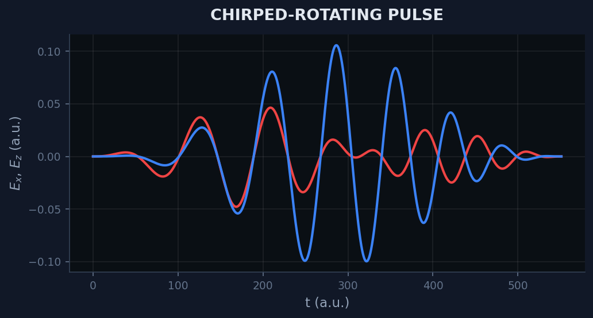
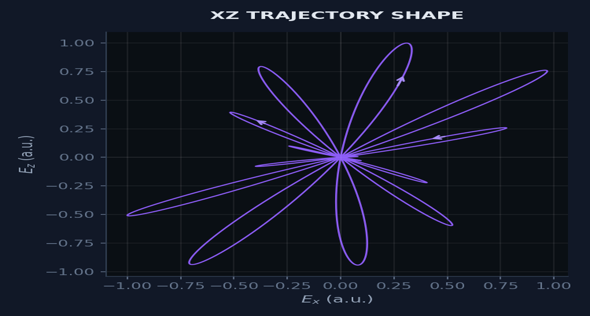
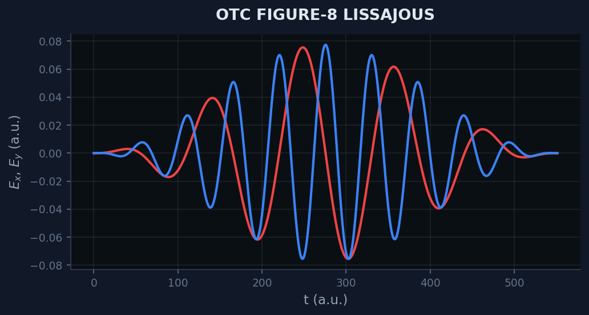
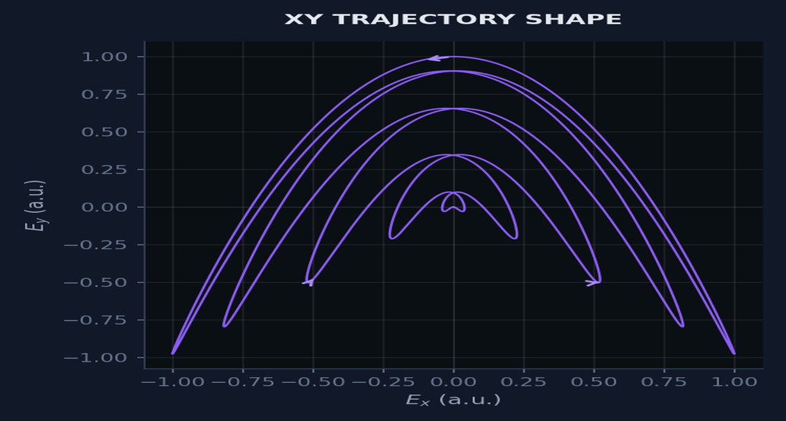
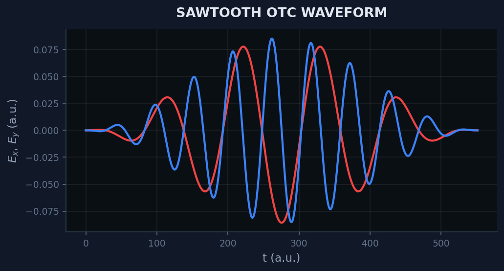
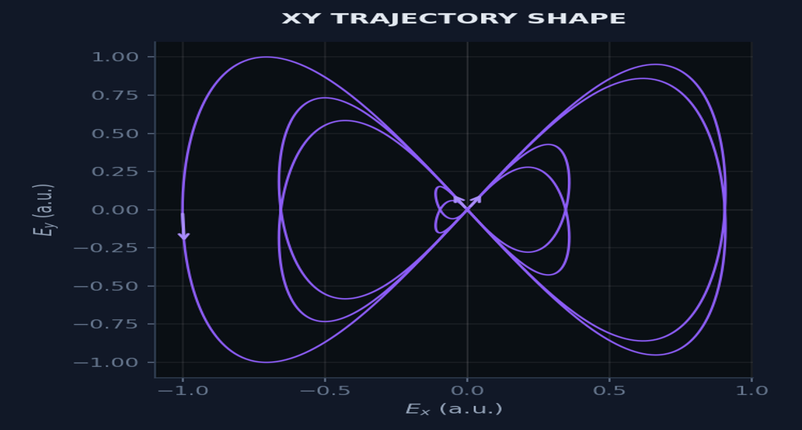
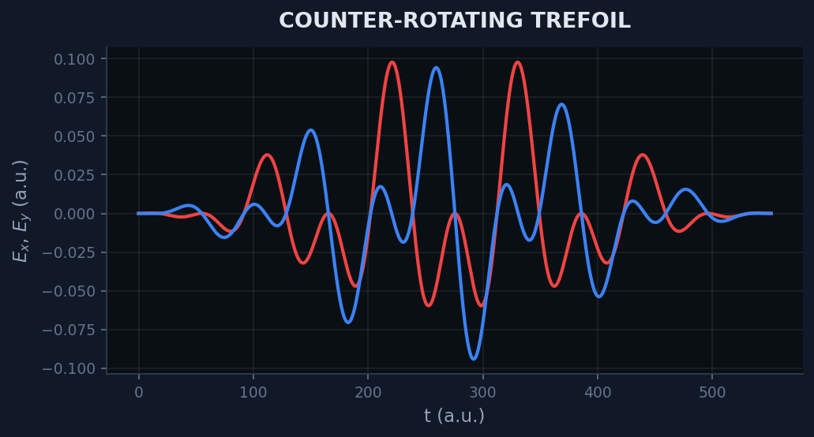
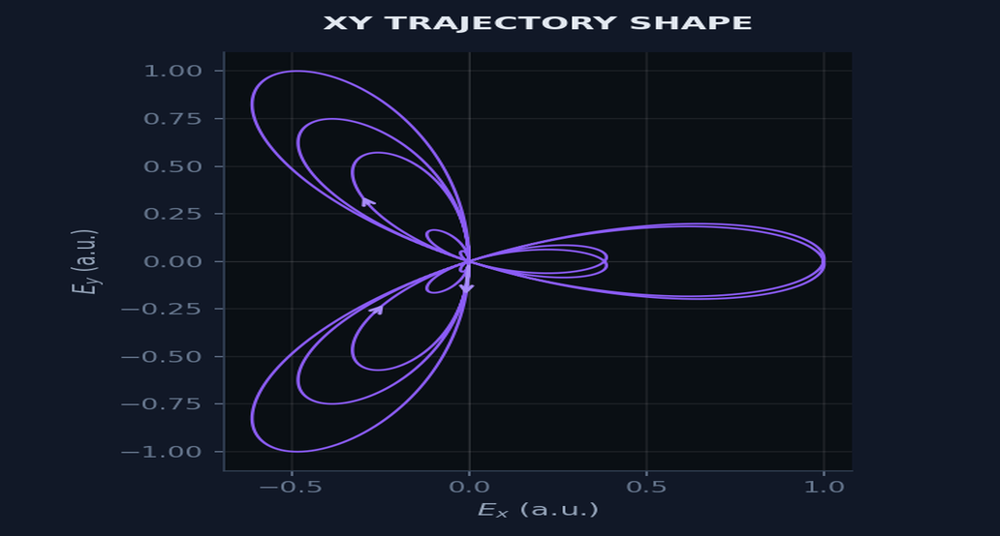

/ Gallery
3D Dynamics for Dihydrogen Cation Ground State
Example of high-performance simulations of molecular dynamics under selected strong laser field waveforms.


XZ chirped-rotating · 10 cycles · ω = 0.057 a.u. (800 nm) · |E| = 0.107 a.u.


OTC · 10 cycles · A_ω = A_2ω = 0.077 a.u. · |E| = 0.107 a.u.


Sawtooth OTC · 10 cycles · A_ω = A_2ω = 0.086 a.u. · |E| = 0.107 a.u.


Counter-rotating · 10 cycles · A_ω = A_2ω = 0.054 a.u. · |E| = 0.107 a.u.